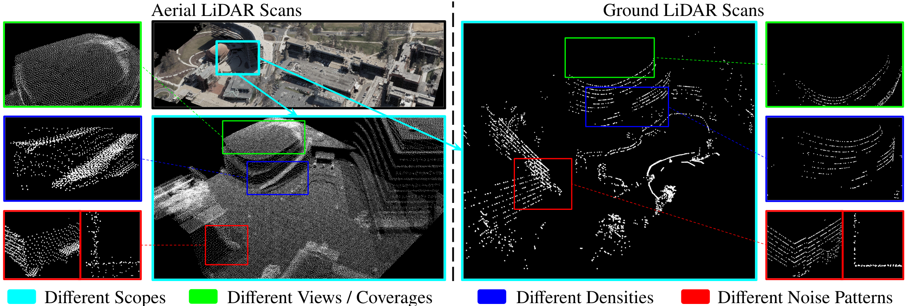
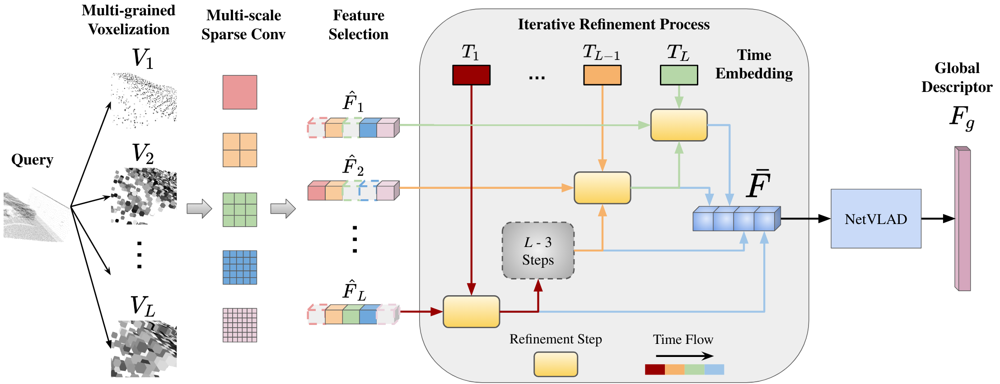
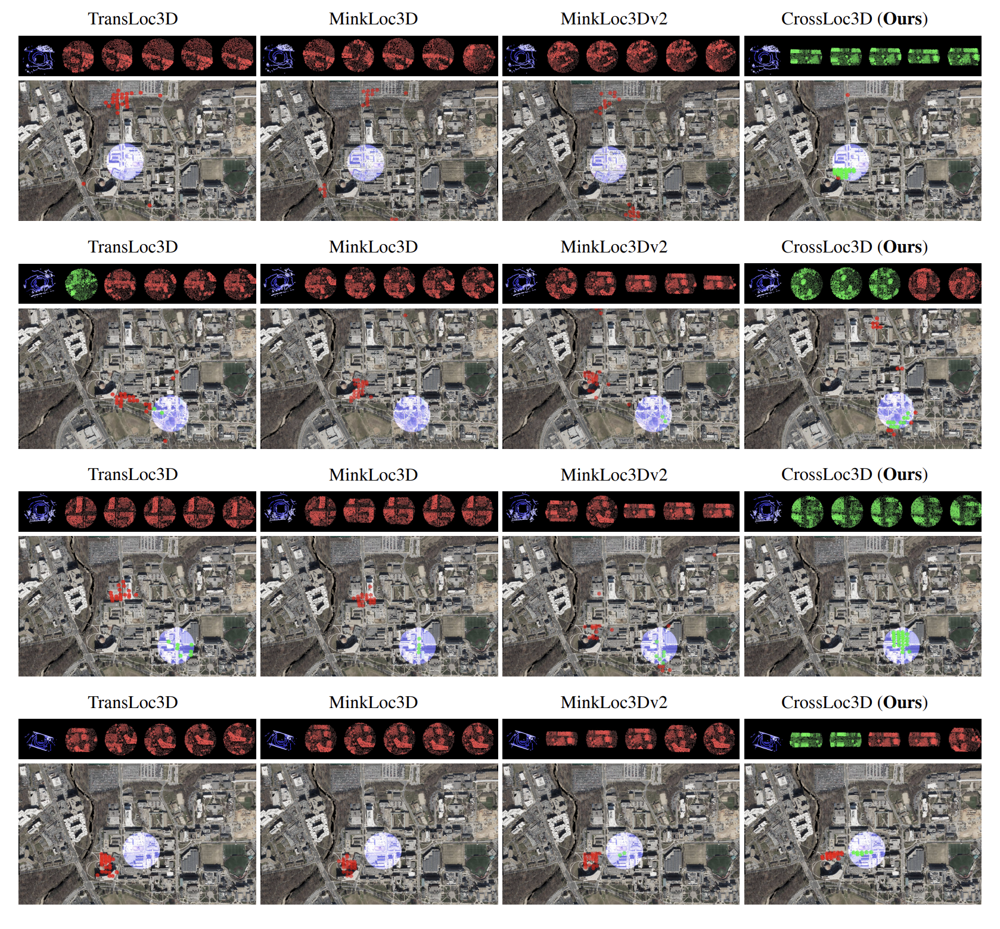

Motivation

Representation gap between aerial and ground sources: We use the bounding box with the same color to focus on the same region and highlight the differences between aerial (left) and ground (right) LiDAR scans.
- Scopes: The aerial scans cover a large region, while ground scans cover only a local area.
- Coverages: The aerial scans cover the top of the buildings, while ground scans cover more details on the ground.
- Densities: The distribution and density of the points are different because of various scan patterns, effective ranges, and fidelity of LiDARs.
- Noise Patterns: The aerial scans have larger noises, as we can see from a bird-eye view and top-down view of a corner of the building.
Network Architecture

Architecture of our network CROSSLOC3D: Our network consists of three parts: multi-grained feature selection, iterative refinement, and NetVLAD. First, we run the points through multi-grained voxelizations and several streams of sparse convolution operations with different kernel sizes. We use feature selection to choose the best field of view and keep the corresponding features F̂i for each voxelization Vi. Second, we perform an iterative refinement process to obtain a set of local features F̄. Finally, the NetVLAD module will produce the global descriptor Fg by aggregating local features F̄.
Results

Figure 7: More qualitative comparisons between CROSSLOC3D and other SOTA methods [32, 17, 18]: For each row, top: Input ground query (blue) and top 5 retrievals (ranked from left to right) from the database of aerial data (true neighbor – green, false neighbor – red). For each row, bottom: Distributions of ground query and top 25 retrievals.
Interactive Refinement Visualization
Local Point Cloud Geometry (3D)
Input Query (Ground)
QueryStep 1 Retrieval
Loading...Step 2 Retrieval
Loading...Step 3 (Final) Retrieval
Loading...Refinement Summary
Iterative refinement steps:
Active Visual Step
RGB Global Pointcloud Map (Centered 3D)
Leaflet Satellite Map (2D UTM Projection)
2D MapRegion Contribution Analysis
Region correspondence table every region and its strongest partners, at a glance
Contribution matrix query regions × retrieved regions
Table: top 20 pairs
| # | Query | Retrieved | Share | Cumulative |
|---|
Cumulative share how many pairs it takes
Pairs sorted by contribution. Curves can pass 100% because some pairs are negative and pull the total back down.
Top pairs flow query region → retrieved region
Pair close-ups top-down (with surroundings) and side view
Same metres-per-pixel within a row. The query is in the robot frame (heading unknown), so compare shape and height, not orientation.
Ground-to-Ground Retrieval
The CS-Campus3D "Aerial + Ground" score is an average over 13 separate databases: the aerial map and
12 ground training runs. Each test query (ground runs 13–19) is matched against each database on its own,
so 12 of the 13 retrievals are ground scan → ground scan. This section shows those ground retrievals next to the
aerial one. All numbers are from campus_best.pth with the repo's evaluation (success = within 100 m).
Recall by database 1059 test queries
How close are test queries to training scans? distance to the nearest ground scan of runs 1–12
Top-1 outcome per query pooled ground database vs aerial
Query explorer
Where the retrievals are ±250 m around the query
Top-1 from each ground run each run is its own database in the paper's average
| Run | Nearest scan in run | Top-1 distance | Result |
|---|
Top-5 ground retrievals pooled database of all 12 training runs (… scans), top-down
Each card overlays the retrieved scan (magenta) on the query (blue). Ground scans are stored in the sensor frame with unknown heading and per-frame scale, so the retrieved scan is fitted to the query by searching yaw, scale (0.8–1.25×) and shift. "Overlap" is the share of points within ~1.6 m of the other scan after the fit. The same fit against a random scan >300 m away is shown for reference: overlap well above it suggests the same structures, but similar numbers don't rule a match out (viewpoint and occlusion change a lot within a few metres). Scale is estimated (~79 m per unit), so metres are approximate.
Region contribution analysis which parts of the two scans make the ground retrieval
Both scans are split into 12 regions, and the distance the evaluation ranks by is split exactly into region-pair terms (as in the cross-source panel above, but for the full embedding and for Euclidean distance rather than a dot product). Pick one of the top-3 retrievals.
Ground-to-Aerial Retrieval
The paper's main task: a ground scan from runs 13–19 retrieves aerial tiles (database: aerial set 1). Unlike the cross-source panels above, which look at one refinement step and a dot product, everything here uses the full embedding and the Euclidean distance the evaluation ranks by. To compare where regions are, the ground scan is put on the map with its GPS position and the heading of its GPS track.
Where does the top-1 tile land? distance from the query, 1059 queries
Is the GPS heading right? independent yaw fit against the aerial height map
Do the strongest region pairs join the same place? 100 sampled pairs per row
Query explorer
Region contribution analysis 12 ground regions × 24 aerial regions · top-3 tiles and the tile at the true position
Aerial-to-Aerial Retrieval
Every aerial tile (200 m × 200 m, one every ~16 m) exists twice in the evaluation files: sample _0 (set 0) and sample _1 (set 1)
are two different 4096-point draws of the same tile at the same position. The paper only uses set 1 as a database for ground queries.
Here each set-0 tile queries set 1, with and without its twin. All of these tiles are also training data, so this measures how well the
model has fit the aerial map, not generalisation.
Descriptor distance vs. distance on the ground relative to unrelated pairs (= 1)
How far is the top-1? share of queries with top-1 within x m
Do the strongest region pairs join the same place? region contribution analysis over sampled pairs
Tile explorer
| Rank (twin removed) | Offset | Distance | Descriptor distance |
|---|
Region contribution analysis 24 regions per tile
Continuous Trajectory Playback (umd_gps_3)
Trajectory Controls
Trajectory on Global 3D Map
Trajectory Query / Retrieved Point Clouds
Trajectory Query (Ground)
QueryRetrieved (Aerial)
--BibTeX
@InProceedings{Guan_2023_ICCV,
author = {Guan, Tianrui and Muthuselvam, Aswath and Hoover, Montana and Wang, Xijun and Liang, Jing and Sathyamoorthy, Adarsh Jagan and Conover, Damon and Manocha, Dinesh},
title = {CrossLoc3D: Aerial-Ground Cross-Source 3D Place Recognition},
booktitle = {Proceedings of the IEEE/CVF International Conference on Computer Vision (ICCV)},
month = {October},
year = {2023},
}